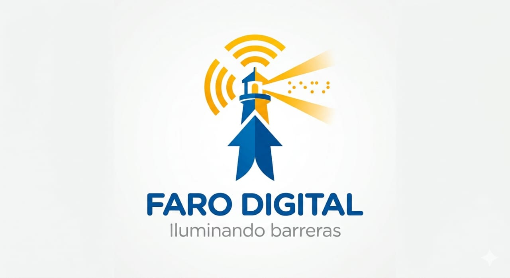

Faro Digital: Iluminando barreras en todo el mundo.
💡 ¡Hola! Soy Gonzalo.
Es una consultoría integral nacida en Salta con visión global, dedicada a que el mundo digital, informativo y físico sea accesible para todos.
La accesibilidad no tiene fronteras. Si tu contenido no es inclusivo, millones de personas no pueden escucharte, leerte o comprarte. Mi misión es que tu mensaje llegue a todos sin obstáculos.
Ya sea un comercio local o una empresa internacional, Faro Digital es tu socio para liderar la inclusión.